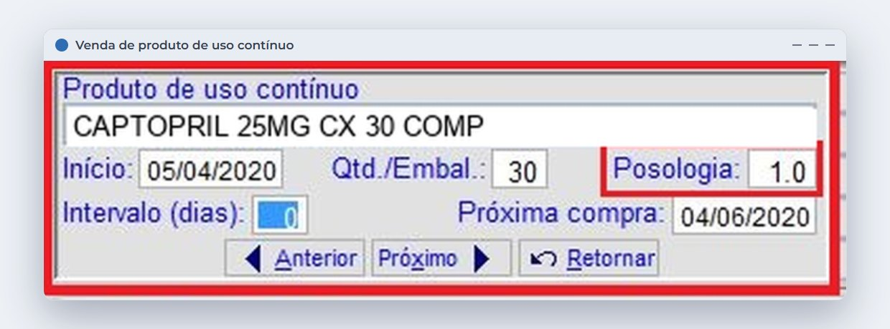
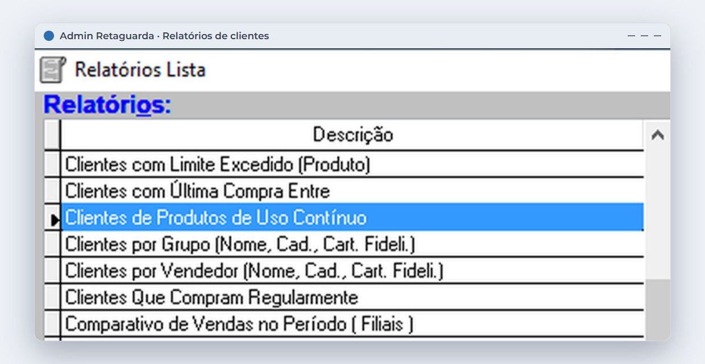

Em 30 segundos
- O ciclo para refazer uma medicação contínua é, em média, de 60 dias e costuma depender de o próprio cliente lembrar.
- Sem lembrete, a reposição pode virar nova cotação entre farmácias, por preço ou por agilidade.
- Informando a posologia na venda, o sistema calcula a próxima compra e avisa o balcão nos 9 dias anteriores ao fim da medicação.
- Dado de medicamento é dado de saúde: combine o pós-venda com regras claras de autorização e LGPD.
Dona Maria toma o mesmo medicamento há anos e compra sempre com você. Um dia, a caixa está quase no fim, ela passa em frente a outra farmácia e aproveita. Ninguém reclamou, ninguém cancelou nada. No seu caixa, essa perda não aparece em lugar nenhum.
É assim que o cliente de uso contínuo costuma ir embora: em silêncio, na hora da reposição.
A venda que some sem aviso
Muitos clientes compram a mesma medicação por longos períodos, para si ou para a família. O ciclo de reposição é, em média, de 60 dias e, na maioria das vezes, parte de uma nova iniciativa do próprio cliente.
Quando a farmácia não se antecipa, duas coisas podem acontecer: o tratamento corre o risco de ser interrompido, e a reposição vira a oportunidade de comparar preço e agilidade com outras lojas.
Poucas farmácias têm uma rotina para lembrar o paciente de que a medicação está perto do fim. Quem cria essa rotina atende melhor e chega antes da concorrência.
Quanto vale essa recompra
Antes de montar qualquer processo, vale fazer a conta com os números da sua loja. A simulação abaixo mostra o que representa, em um ano, deixar de perder uma pequena parte desses clientes.
Simule o valor de manter esses clientes
Troque os exemplos pelos números da sua farmácia.
O resultado é uma estimativa de faturamento, não de lucro, e serve para dimensionar o tamanho da oportunidade na sua loja.
Como funciona no sistema
No Prosystem, o controle começa no cadastro do produto, onde ficam a quantidade de comprimidos ou doses por embalagem e, quando houver, o intervalo entre embalagens. O restante acontece na rotina do balcão.
1. Na venda, a posologia vira uma data
Ao vender um produto de uso contínuo para um cliente identificado, o sistema pede a posologia e calcula automaticamente a próxima compra. Sem o cliente na venda, essa informação não existe. Por isso, identificar o cliente é o hábito que sustenta todo o processo.

2. Na volta do cliente, o balcão é avisado
Se esse cliente fizer qualquer compra nos 9 dias anteriores ao fim da medicação, um alerta aparece na pré-venda. O vendedor pode oferecer a reposição ali mesmo e, com um clique em "Inserir/Vender", o produto entra na venda. Se a reposição já tiver sido comprada, o aviso não se repete.

3. No escritório, quem deve comprar vira lista
O relatório "Clientes de Produtos de Uso Contínuo", no Admin Retaguarda, filtra por período de próxima compra e traz nome, contato e produto. É a base para organizar o pós-venda ativo.

Quer ver isso funcionando na sua farmácia?
Fale com a ProSystem e veja como a posologia, o alerta no balcão e o relatório de próxima compra entram na rotina da sua loja.
A rotina de pós-venda em cinco passos
- Comece pelos produtos que mais se repetem. Revise o cadastro dos itens de uso contínuo com maior saída, em vez de tentar acertar tudo de uma vez.
- Torne a identificação do cliente um padrão. Combine com a equipe de pedir o cadastro nas vendas desses produtos.
- Confirme a posologia com o cliente. A data só é útil se a dose estiver correta. Em caso de dúvida, o farmacêutico orienta.
- Reserve um horário fixo na semana. Gere o relatório dos próximos dias e defina quem faz os contatos autorizados.
- Meça o retorno. Compare, a cada mês, quantos clientes da lista voltaram a comprar.
Cuidados com a LGPD
A lista de quem toma qual medicamento merece atenção especial. A Lei Geral de Proteção de Dados classifica o dado referente à saúde como dado pessoal sensível (art. 5º, II), e o art. 11 limita as hipóteses em que ele pode ser tratado.
Registre a autorização do cliente para receber lembretes, limite o acesso ao relatório a quem realmente precisa e não cite o medicamento em mensagens que outras pessoas possam ver. Valide o processo com a assessoria jurídica da farmácia.
Perguntas frequentes
O que é cliente de uso contínuo na farmácia?
É o cliente que compra o mesmo medicamento de forma recorrente, para si ou para um familiar, por um longo período. O ciclo de reposição costuma ser, em média, de 60 dias.
Como o Prosystem calcula a próxima compra?
Com a quantidade da embalagem informada no cadastro do produto e a posologia informada na venda para um cliente identificado, o sistema calcula e guarda a data da próxima compra.
Quando o alerta de uso contínuo aparece?
Quando o cliente faz uma compra nos 9 dias anteriores ao fim da medicação. O aviso aparece na tela de pré-venda e não é repetido se a reposição já tiver sido comprada.
A farmácia pode entrar em contato para lembrar da reposição?
Dado de medicamento é dado de saúde, considerado sensível pela LGPD. O contato deve seguir uma base legal adequada, com autorização registrada e acesso restrito às informações, validado pela assessoria jurídica da farmácia.
Fontes
- Clientes de uso contínuo: saiba como fazer o pós-venda (Universidade Prosystem)
- Uso contínuo ativo: não perca vendas (Universidade Prosystem)
- Lei nº 13.709/2018 (LGPD), arts. 5º e 11 (Planalto)
Conteúdo informativo, atualizado em 30 de outubro de 2026. Telas reais do Prosystem, com nomes de produtos e dados de pessoas ocultados ou substituídos. Os valores da simulação são exemplos.